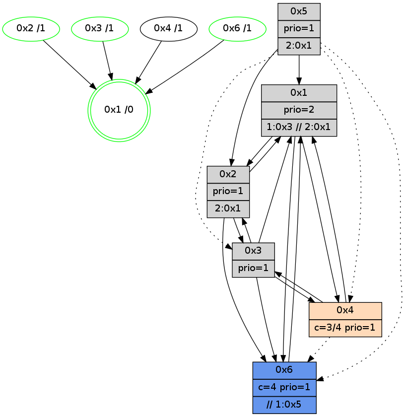

>> << IDX [start] -100 -25 -5 +0 +5 +25 +100 [885.000084162]
 Previous packets
----------------------------------------------------------------------
880.039043 beacon01(adaf) #0 coord=01,02,05,03,04,06 cycle=432.0ms assoc
-- color-indic=1 64 9f cb
880.049003 beacon02(adaf) #0 coord=01,02,05,03,04,06 cycle=432.0ms assoc 64 ce 34
880.059003 beacon05(adaf) #0 coord=01,02,05,03,04,06 cycle=432.0ms assoc 64 68 1e
880.069004 beacon03(adaf) #0 coord=01,02,05,03,04,06 cycle=432.0ms assoc 64 f4 3a
880.079004 beacon04(adaf) #0 coord=01,02,05,03,04,06 cycle=432.0ms assoc 64 52 10
880.089005 beacon06(adaf) #0 coord=01,02,05,03,04,06 cycle=432.0ms assoc 64 26 0c
880.100720 [Hello(4): seq=685 sym=2,1,3 asym=6 sysInfo=hasWarning stat=2:0,0,0,0/1:8,10,0,0/3:6,2,2,4/6:10,14,3,0]
880.105426 [Hello(1): seq=584 sym=2,4,3,6 sysInfo=hasWarning,coloring-mode-on,ColoringModeRequestCalled stat=2:7,4,3,0/4:0,0,1,0/3:0,4,2,0/6:10,6,3,2]
880.108876 [STC(1) #0.98 new-neigh,tree-change,inconsistent-stability,stable,to-color d=0]
----------------------------------------------------------------------
880.531151 beacon01(adaf) #0 coord=01,02,05,03,04,06 cycle=432.0ms assoc
-- color-indic=1 64 5b a4
880.541114 beacon02(adaf) #0 coord=01,02,05,03,04,06 cycle=432.0ms assoc 64 0a 5b
880.551113 beacon05(adaf) #0 coord=01,02,05,03,04,06 cycle=432.0ms assoc 64 ac 71
880.561112 beacon03(adaf) #0 coord=01,02,05,03,04,06 cycle=432.0ms assoc 64 30 55
880.571113 beacon04(adaf) #0 coord=01,02,05,03,04,06 cycle=432.0ms assoc 64 96 7f
880.581113 beacon06(adaf) #0 coord=01,02,05,03,04,06 cycle=432.0ms assoc 64 e2 63
880.592655 [STC(4)->1 #0.98 new-neigh,tree-change,inconsistent-stability,to-color d=1]
880.594752 [Hello(3): seq=683 sym=6,1,2 sysInfo=hasWarning stat=6:4,10,3,0/1:12,14,12,1/2:12,10,4,0]
880.596640 [STC(2)->1 #0.98 new-neigh,tree-change,inconsistent-stability,stable,to-color d=1]
880.598462 [Color(1) seq=111 @0:0 prio=2 >1.@3,1.@5 >>2.@1 c=1,4,6;0,2,3,5]
880.602729 [Color(6) seq=111 @0:0 color=4 prio=1 >>1.@5 c=0,1,2,5,6;3]
880.609037 [STC(3)->1 #0.98 new-neigh,tree-change,inconsistent-stability,stable,to-color d=1]
880.611317 [Color(3) seq=69 @0:0 prio=1 c=4;0,1,2,5,6]
880.617862 [TreeStatus(2)-.->1 #0.98 new-neigh,tree-change,inconsistent-stability,stable child=1]
----------------------------------------------------------------------
881.023259 beacon01(adaf) #0 coord=01,02,05,03,04,06 cycle=432.0ms assoc
-- color-indic=1 64 17 14
881.033220 beacon02(adaf) #0 coord=01,02,05,03,04,06 cycle=432.0ms assoc 64 46 eb
881.043219 beacon05(adaf) #0 coord=01,02,05,03,04,06 cycle=432.0ms assoc 64 e0 c1
881.053220 beacon03(adaf) #0 coord=01,02,05,03,04,06 cycle=432.0ms assoc 64 7c e5
881.063222 beacon04(adaf) #0 coord=01,02,05,03,04,06 cycle=432.0ms assoc 64 da cf
881.073220 beacon06(adaf) #0 coord=01,02,05,03,04,06 cycle=432.0ms assoc 64 ae d3
881.084450 [Hello(1): seq=585 sym=2,3,6 sysInfo=hasWarning,coloring-mode-on,ColoringModeRequestCalled stat=2:7,4,3,1/3:0,5,3,0/6:10,7,3,2]
881.088561 [Hello(4): seq=686 sym=2,1,3 sysInfo=hasWarning stat=2:0,0,1,1/1:9,11,1,0/3:6,3,3,4]
----------------------------------------------------------------------
881.515367 beacon01(adaf) #0 coord=01,02,05,03,04,06 cycle=432.0ms assoc
-- color-indic=1 64 d3 7b
881.525328 beacon02(adaf) #0 coord=01,02,05,03,04,06 cycle=432.0ms assoc 64 82 84
881.535328 beacon05(adaf) #0 coord=01,02,05,03,04,06 cycle=432.0ms assoc 64 24 ae
881.545329 beacon03(adaf) #0 coord=01,02,05,03,04,06 cycle=432.0ms assoc 64 b8 8a
881.555329 beacon04(adaf) #0 coord=01,02,05,03,04,06 cycle=432.0ms assoc 64 1e a0
881.565329 beacon06(adaf) #0 coord=01,02,05,03,04,06 cycle=432.0ms assoc 64 6a bc
881.577839 [Color(6) seq=112 @0:0 color=4 prio=1 >>1.@5 c=0,1,2,5,6;3]
881.579573 [Hello(3): seq=684 sym=6,1,2 sysInfo=hasWarning stat=6:5,10,3,0/1:13,14,12,1/2:12,10,4,1]
881.582014 [Color(1) seq=112 @0:0 prio=2 >1.@3,1.@5 >>2.@1 c=1,4,6;0,2,3,5]
881.584305 [Color(3) seq=70 @0:0 prio=1 c=4;0,1,2,5,6]
----------------------------------------------------------------------
882.007475 beacon01(adaf) #0 coord=01,02,05,03,04,06 cycle=432.0ms assoc
-- color-indic=1 64 9e 7c
882.017436 beacon02(adaf) #0 coord=01,02,05,03,04,06 cycle=432.0ms assoc 64 cf 83
882.027435 beacon05(adaf) #0 coord=01,02,05,03,04,06 cycle=432.0ms assoc 64 69 a9
882.037436 beacon03(adaf) #0 coord=01,02,05,03,04,06 cycle=432.0ms assoc 64 f5 8d
882.047436 beacon04(adaf) #0 coord=01,02,05,03,04,06 cycle=432.0ms assoc 64 53 a7
882.057437 beacon06(adaf) #0 coord=01,02,05,03,04,06 cycle=432.0ms assoc 64 27 bb
882.068932 [Hello(1): seq=586 sym=2,3,6 sysInfo=hasWarning,coloring-mode-on,ColoringModeRequestCalled stat=2:8,4,3,1/3:0,6,3,0/6:10,7,3,2]
882.072764 [Hello(4): seq=687 sym=2,1,3 sysInfo=hasWarning stat=2:0,0,1,1/1:9,12,1,0/3:7,4,3,4]
882.074576 [Hello(2): seq=1175 sym=6,1,3 sysInfo=hasWarning stat=6:1,8,4,4/1:14,9,10,0/3:5,10,4,1]
----------------------------------------------------------------------
882.499582 beacon01(adaf) #0 coord=01,02,05,03,04,06 cycle=432.0ms assoc
-- color-indic=1 64 5a 13
882.509544 beacon02(adaf) #0 coord=01,02,05,03,04,06 cycle=432.0ms assoc 64 0b ec
882.519544 beacon05(adaf) #0 coord=01,02,05,03,04,06 cycle=432.0ms assoc 64 ad c6
882.529543 beacon03(adaf) #0 coord=01,02,05,03,04,06 cycle=432.0ms assoc 64 31 e2
882.539544 beacon04(adaf) #0 coord=01,02,05,03,04,06 cycle=432.0ms assoc 64 97 c8
882.549545 beacon06(adaf) #0 coord=01,02,05,03,04,06 cycle=432.0ms assoc 64 e3 d4
882.561940 [Color(2) seq=85 @0:0 prio=1 c=;1,4,6]
882.563762 [Hello(3): seq=685 sym=6,4,1,2 sysInfo=hasWarning stat=6:6,10,3,0/4:0,0,0,0/1:14,14,12,1/2:12,10,4,1]
882.565689 [Color(6) seq=113 @0:0 color=4 prio=1 >>1.@5 c=0,1,2,5,6;3]
882.568630 [Color(3) seq=71 @0:0 prio=1 c=4;0,1,2,5,6]
882.574646 [STC(1) #0.99 new-neigh,tree-change,inconsistent-stability,stable,to-color d=0]
882.577898 [Color(1) seq=113 @0:0 prio=2 >1.@3,1.@5 >>2.@1 c=1,4,6;0,2,3,5]
----------------------------------------------------------------------
882.991691 beacon01(adaf) #0 coord=01,02,05,03,04,06 cycle=432.0ms assoc
-- color-indic=1 64 16 a3
883.001652 beacon02(adaf) #0 coord=01,02,05,03,04,06 cycle=432.0ms assoc 64 47 5c
883.011651 beacon05(adaf) #0 coord=01,02,05,03,04,06 cycle=432.0ms assoc 64 e1 76
883.021652 beacon03(adaf) #0 coord=01,02,05,03,04,06 cycle=432.0ms assoc 64 7d 52
883.031652 beacon04(adaf) #0 coord=01,02,05,03,04,06 cycle=432.0ms assoc 64 db 78
883.041652 beacon06(adaf) #0 coord=01,02,05,03,04,06 cycle=432.0ms assoc 64 af 64
883.052869 [Hello(1): seq=587 sym=2,4,6 sysInfo=hasWarning,coloring-mode-on,ColoringModeRequestCalled stat=2:9,4,3,1/4:0,0,0,0/6:10,7,3,2]
883.056918 [STC(3)->1 #0.99 new-neigh,tree-change,inconsistent-stability,stable,to-color d=1]
883.058986 [Hello(4): seq=688 sym=2,1,3 asym=6 sysInfo=hasWarning stat=2:0,0,1,1/1:9,13,2,0/3:8,5,3,4/6:0,1,0,0]
883.061917 [STC(6)->1 #0.99 new-neigh,tree-change,inconsistent-stability,stable,to-color d=1]
883.071285 [STC(2)->1 #0.99 new-neigh,tree-change,inconsistent-stability,stable,to-color d=1]
883.076363 [STC(4)->1 #0.99 new-neigh,tree-change,inconsistent-stability,to-color d=1]
----------------------------------------------------------------------
883.483799 beacon01(adaf) #0 coord=01,02,05,03,04,06 cycle=432.0ms assoc
-- color-indic=1 64 d2 cc
883.493759 beacon02(adaf) #0 coord=01,02,05,03,04,06 cycle=432.0ms assoc 64 83 33
883.503760 beacon05(adaf) #0 coord=01,02,05,03,04,06 cycle=432.0ms assoc 64 25 19
883.513761 beacon03(adaf) #0 coord=01,02,05,03,04,06 cycle=432.0ms assoc 64 b9 3d
883.523760 beacon04(adaf) #0 coord=01,02,05,03,04,06 cycle=432.0ms assoc 64 1f 17
883.533761 beacon06(adaf) #0 coord=01,02,05,03,04,06 cycle=432.0ms assoc 64 6b 0b
883.546170 [Color(2) seq=86 @0:0 prio=1 >2.@1,1.@3 c=4;0,1,2,5,6]
883.547998 [Hello(3): seq=686 sym=6,4,1,2 sysInfo=hasWarning stat=6:6,10,4,0/4:0,0,1,0/1:14,15,13,1/2:12,10,5,1]
883.549922 [Color(6) seq=114 @0:0 color=4 prio=1 >>1.@5 c=0,1,2,5,6;3]
----------------------------------------------------------------------
883.975907 beacon01(adaf) #0 coord=01,02,05,03,04,06 cycle=432.0ms assoc
-- color-indic=1 64 f7 f1
883.985868 beacon02(adaf) #0 coord=01,02,05,03,04,06 cycle=432.0ms assoc 64 a6 0e
883.995870 beacon05(adaf) #0 coord=01,02,05,03,04,06 cycle=432.0ms assoc 64 00 24
884.005868 beacon03(adaf) #0 coord=01,02,05,03,04,06 cycle=432.0ms assoc 64 9c 00
884.015868 beacon04(adaf) #0 coord=01,02,05,03,04,06 cycle=432.0ms assoc 64 3a 2a
884.025871 beacon06(adaf) #0 coord=01,02,05,03,04,06 cycle=432.0ms assoc 64 4e 36
884.037623 [Hello(4): seq=689 sym=1,3 asym=6 sysInfo=hasWarning stat=1:9,13,2,0/3:9,6,3,4/6:0,2,0,0]
884.048833 [Hello(1): seq=588 sym=2,4,6 sysInfo=hasWarning,coloring-mode-on,ColoringModeRequestCalled stat=2:9,4,4,1/4:0,0,1,0/6:10,7,4,2]
----------------------------------------------------------------------
884.468014 beacon01(adaf) #0 coord=01,02,05,03,04,06 cycle=432.0ms assoc
-- color-indic=1 64 33 9e
884.477976 beacon02(adaf) #0 coord=01,02,05,03,04,06 cycle=432.0ms assoc 64 62 61
884.487976 beacon05(adaf) #0 coord=01,02,05,03,04,06 cycle=432.0ms assoc 64 c4 4b
884.497976 beacon03(adaf) #0 coord=01,02,05,03,04,06 cycle=432.0ms assoc 64 58 6f
884.507975 beacon04(adaf) #0 coord=01,02,05,03,04,06 cycle=432.0ms assoc 64 fe 45
884.517976 beacon06(adaf) #0 coord=01,02,05,03,04,06 cycle=432.0ms assoc 64 8a 59
884.530349 [Color(2) seq=87 @0:0 prio=1 >2.@1,1.@3 c=4;0,1,2,5,6]
884.532214 [Hello(3): seq=687 sym=6,4,1,2 sysInfo=hasWarning stat=6:7,10,4,0/4:0,0,1,0/1:15,15,13,1/2:12,10,5,1]
884.534156 [Color(6) seq=115 @0:0 color=4 prio=1 >>1.@5 c=0,1,2,5,6;3]
884.537081 [Color(3) seq=73 @0:0 prio=1 c=4;0,1,2,5,6]
884.541852 [Color(1) seq=115 @0:0 prio=2 >1.@3,1.@5 >>2.@1 c=1,4,6;0,2,3,5]
----------------------------------------------------------------------
884.960122 beacon01(adaf) #0 coord=01,02,05,03,04,06 cycle=432.0ms assoc
-- color-indic=1 64 7f 2e
884.970081 beacon02(adaf) #0 coord=01,02,05,03,04,06 cycle=432.0ms assoc 64 2e d1
884.980083 beacon05(adaf) #0 coord=01,02,05,03,04,06 cycle=432.0ms assoc 64 88 fb
884.990084 beacon03(adaf) #0 coord=01,02,05,03,04,06 cycle=432.0ms assoc 64 14 df